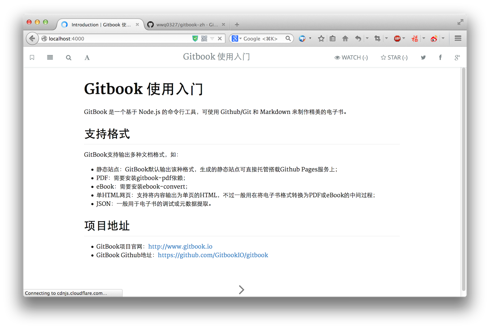

输出为静态网站
你有两种方式输出一个静态网站：
本地预览时自动生成
当你在自己的电脑上编辑好图书之后，你可以使用Gitbook的命令行进行本地预览：
E:\gitbook\gitbook-studying>gitbook serve ./图书目录
这里会启动一个端口为4000用于预览的服务器：
E:\gitbook\gitbook-studying> gitbook serve .
Press CTRL+C to quit ...
Starting build ...
Successfuly built !
Starting server ...
Serving book on http://localhost:4000
你可以你的浏览器中打开这个网址：http://localhost:4000：

这里你会发现，你在你的图书项目的目录中多了一个名为_book的文件目录，而这个目录中的文件，即是生成的静态网站内容。
使用build参数生成到指定目录
与直接预览生成的静态网站文件不一样的是，使用这个命令，你可以将内容输入到你所想要的目录中去,步骤如下：
- mkdir outbook
- cd..,退到上一层目录，即E:\gitbook (如果不，会出错)
- 然后,E:\gitbook>gitbook build gitbook-studying gitbook-studying/outbook
- 则在 E:\gitbook\gitbook-studying\outbook下生成了同样的静态html文件
无论哪种方式，你都可以将这个文件打包，然后把你的书发给你的朋友们了！